-
Unwell
Homelessness and Health
-
Untreated
The Struggle with Addiction
-
Unaccompanied
Family Ties Severed
-
Unforgotten
Veterans' Homefront Battle
-
Unwell
Homelessness and Health
Heather Hanson is unsheltered, diabetic and has been living on the streets for 14 months.
She struggles to maintain a healthy diet on the food provided by emergency shelters like St. Vincent De Paul, a Catholic nonprofit organization just a few minutes from downtown Phoenix.
She went into a diabetic coma in March 2018 after her blood glucose reached severe levels.
“I’m almost recuperated, not quite though,” Hanson said. “Your body goes into shock. I didn’t realize how shocked my body was and it was from all the food — a lot of sugar and salt; my body rejected all of it.”
About 73 percent of people experiencing homelessness reported at least one unmet health need in a 2010 National Institute of Health study.
Hanson has tried to eat healthier since her hospitalization, but finds that experiencing homelessness limits that goal.
“I need a sugar substitute, but I don’t have any food stamps right now,” Hanson said. “So I can’t buy anything.”
Her current solution is to routinely inject insulin several times a day. She keeps her insulin pens hidden in a small reusable shopping bag tucked away on the bottom of a walker filled with clothes and bedding wrapped in garbage bags.
“As long as it stays out of the sun, I should be all right,” Hanson said. “Because when it gets too hot, it’s not good anymore.”
The FDA recommends insulin not be stored in temperatures above 86 degrees Fahrenheit. It’s complicated for Hanson considering that the average temperature in Phoenix summers routinely rise well above 100 degrees.
“A couple times so far, I’ve had to throw it all away,” Hanson said. “‘Because I’m not going to poke myself if it ain’t no good.”
Even when temperatures don’t rise, she has to keep a vigilant eye on medications at all times.
She claims the Phoenix Public Works Department and Phoenix police swept some of her other medicine into the trash when they performed street cleaning on the intersection of 11th and Madison streets, near Library Park.
People sleeping near the Library Park encampment said anything they could not easily move was collected and thrown away by police.
VIDEO Weekly street cleanups are not popular with most of the unsheltered people living just outside the Central Arizona Shelter Services’ downtown location.“I was like, please let us have that because she had just gotten out of the hospital and they got all her medications,” David Wood, her partner, said. “Thank God, she had her insulin pens because, you know, those are like $125 each, and they will not replace them.”
Hanson has to go to a doctor to refill her prescriptions, but she does not make regular appointments because she can never easily contact or be contacted by medical professionals.
“I don’t know if they’re going to supply bus passes for me for all this stuff yet,” she said. “I just don’t know yet.”
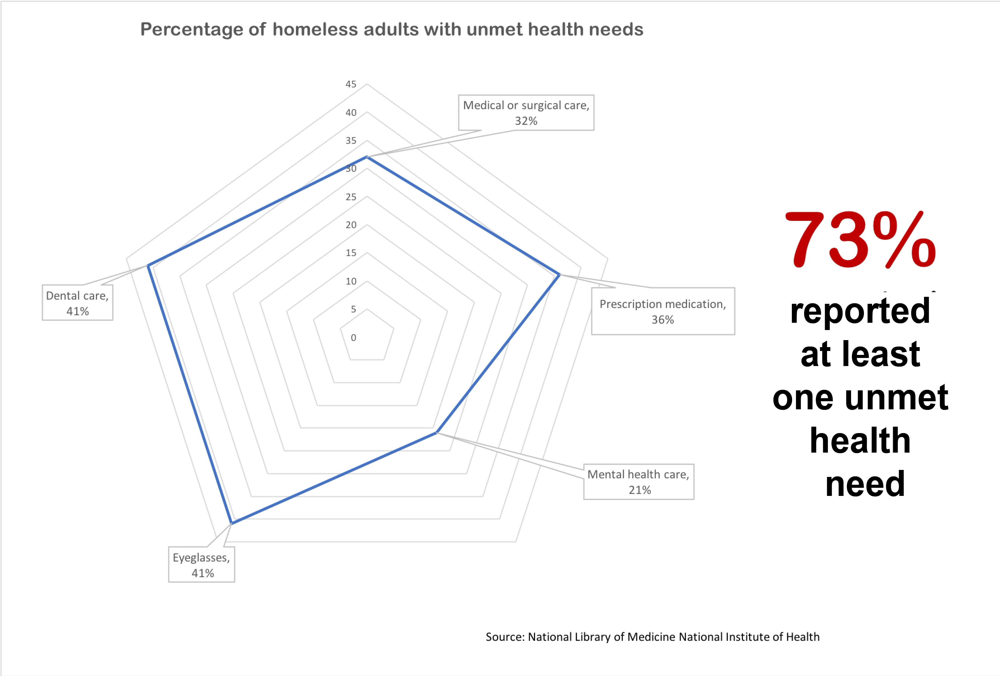Hanson and Wood have also been affected by theft within the homeless community.
“They stole her pills which drop your glucose numbers,” Wood said, “It's sad out here, the homeless steal from the homeless. It's an awful thing”.
Hanson keeps all her belongings with her while she moves from street to street. Leaving her items in a shelter sounds safe in theory, but there are risks involved with trusting a third party to keep them secure.
Jon Swanson is one of those experiencing homelessness and is also living in the Library Park homeless encampment. He said his medication was stolen while his belongings were supposed to be watched by volunteers at the shelter he was staying at.
This shelter, and similar organizations, are located in an area separated by a gated fence from the Library Park homeless encampment. This area is known as the Lodestar Resource Day Center, which provides services for the homeless population under certain conditions in partnership with the Human Services Campus. The organization also helps provide housing for individuals.
“[The volunteers] aren’t responsible,” Swanson said. “If you go and something is missing, they go ‘Oh well, sorry.’”
Many shelters in the Phoenix area require their clients to “bag and tag” their belongings to help keep track of them before using the services.
“It's sad out here, the homeless steal from the homeless. It's an awful thing.”
- David WoodThe same health issues that are exacerbated by homelessness can also be the cause of homelessness.
Linda Stone lives with her daughter, granddaughter and two nieces. Her family frequently struggles to make ends meet and have to cope with the possibility of becoming homeless. Stone had to stop buying her prescription medication in order to cut back on spending. She is currently taking three different medications, which cost $3.35 each. She previously took nine medications, before cutting back to avoid expenses.
“I can't even afford my medicine I'm supposed to be on,” Stone said. “It's been what, almost two years I haven't been on my medicine I'm supposed to be on.”
For many people without a fixed address, lack of healthcare is almost inevitable.
“I don't know if you've ever had to be on your guard, but that's what you have to be down here,” Wood said. “You can't slip.”
Arthur Belyeu has experienced homelessness for several years, but received housing in 2018 with the help of resources located at the resource center in part because of a chronic heart problem, he said.
It’s the second apartment that he’s been set up with in the last few years. The first apartment flooded from a storm, which put him back on the streets for two years.
Belyeu said he knows that having housing doesn’t mean he’s permanently escaped experiencing homelessness.
After living in his second apartment for more than six months, Belyeu said people from an organization located within the resource center said he would need to have a serious mental illness to remain in the apartment.
“I’m very worried about losing my housing, very worried. I believe my housing is jeopardized because of this,” Belyeu said. “I guarantee you if, by three months from now, I don’t accept ... I guarantee you I’ll be homeless again.”
VIDEO Arthur Belyeu shares his experience of how he turned his life around after being homeless for many years. -
Untreated
The Struggle with Addiction
Part I: Enjoying Life Miserably
Jerome Eskeets’ life has been a series of survival stories.
When two men were bludgeoned to death in the middle of the night on the streets of Albuquerque, New Mexico, Eskeets was the only one to escape alive. His friends, Allison Gorman and another man he only knew as Cowboy, were members of what he called his “street family.”
“I barely survived. I had like 32 staples on my head, where I got hit and a couple of fractured bones and such,” said Eskeets, who identifies as Navajo.
The incident occurred in 2015 and Eskeets arrived in Arizona in 2017. But the demons created that night followed him all 400 miles to Phoenix, where he lives the street.
“Sometimes people fight,” he said, rubbing his aching hands and scratched face, wounds from an altercation in the night before. “I kind of get PTSD. I get scared, because of what happened in Albuquerque.”
It was not Eskeets’ first experience with death. His mother and brother died, and his father killed himself. He said his wife, Berlinda, who he calls “Bird,” died of liver disease in January 2018.
Traumas like these spur his alcoholism, he said.
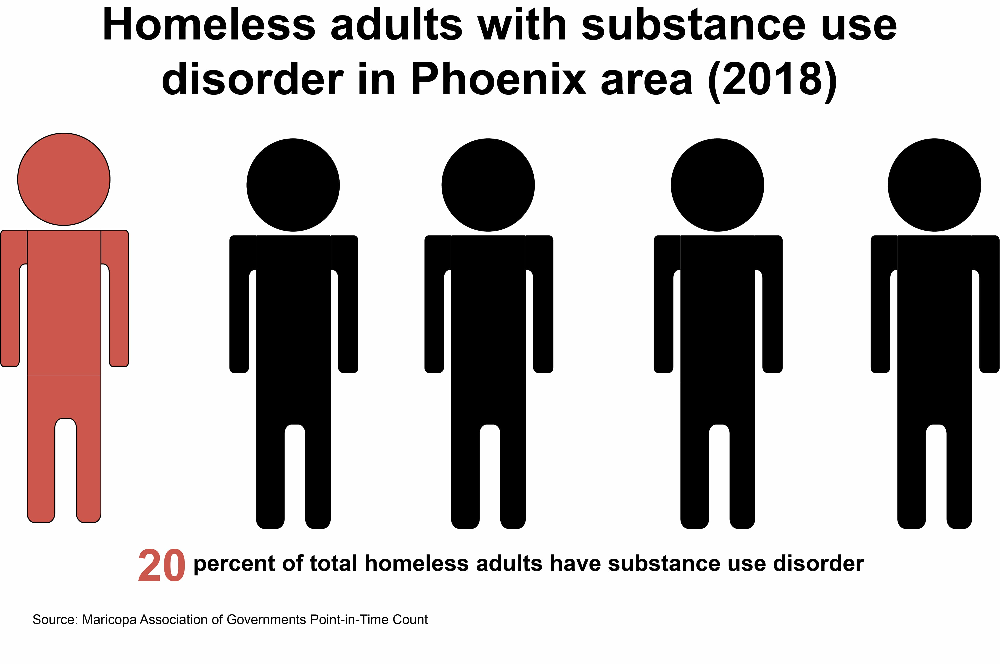“That’s all I do, is drink,” he said. “I try my best to not drink too much, but that doesn’t work that much.”
Eskeets said he gets by with the help of friends he’s made in Phoenix. They don’t use first or last names, just codes they use to identify each other, like Whitey, Star and Two-11.
“My street family, they taught me a lot of things,” he said. “They taught me where to go get clothes, they taught me where to go get something to eat. They taught me how to panhandle — that’s my Ph.D.”
Most of the money Eskeets makes is spent on alcohol. He drinks to kill the pain as a way of “enjoying life miserably.”
But it has also almost killed him twice.
“I was at .457 [blood alcohol level] — I should have been dead, they said,” Eskeets said. “But then I’m used to it. My body’s kind of used to it.”
"My street family, they taught me a lot of things...they taught me how to panhandle—that’s my Ph.D."
- Jerome EskeetsMore than 16 percent of people who experience homelessness in the U.S. identify as being chronic substance users, according to a 2017 report by the Department of Housing and Urban Development . Among those living in Maricopa County in 2018, more than 14 percent of people identified as having a substance use disorder, according to the Maricopa Association of Governments (MAG).
According to the report, more than 6 percent of people in Maricopa County identify as American Indian or Alaska Native, thereby being Maricopa County’s third largest ethnic group experiencing homelessness.
More than 6 percent of people in Maricopa County identify as American Indian or Alaska Native. The survey also found they represent the county’s third largest ethnic group experiencing homelessness. Those who identify as white represent the largest and those identifying as black or African-American, represent the second largest.
Eskeets has three children, one of whom, he said, studies at Arizona State University as of 2018. He also has two sons, but he hasn’t seen any of them in years. He doesn’t want his sons to see him living on the street.
And while he is unsure of whether he is ready to give up drinking, he hopes to see all of his children again one day.
“I try my best to re-comfort myself and stop my drinking and get back to my kids,” he said. “I miss them.”
AUDIO Lebert “Lee” Kaskalla Jr. recounts his family’s battle with alcohol.Lebert Kaskalla Jr. grew up in Zuni, New Mexico and recognizes his alcoholism. He’s a part of the Native American Zuni tribe and drank heavily growing up, he said. When he was a baby, his mother put beer in his bottle and he almost flunked out of high school after drinking and doing drugs, he said.
Alcohol has impacted his siblings, he said. His sister has fetal alcohol syndrome and requires around-the-clock care. As of 2018, Kaskalla’s brother died from alcohol poisoning.
Kaskalla considered killing himself.
“I tried to drink myself to death, but I’m still here,” he said. “I guess I’m not ready to die yet. I got a purpose here. I don't know what it is, I’m still looking for it.”
Kaskalla said his daughter has urged him to stop drinking. He has a certificate in forklifting and hopes to get back on track.
AUDIO Kaskalla Jr. talks about struggling to graduate high school and earning his diploma at 20 years old.
Part II: A graduate
Seanna Perry had never been so happy to hear her son talk about video games. It was the first conversation they’d had in more than two months.
“It's like the best thing in the world, you hear your family's voice,” Perry said. “It’s well worth it.”
For clients in rehabilitation at Phoenix Rescue Mission, contact with family — and the rest of the outside world — is prohibited for the first few months. For Perry, it was one of the most challenging aspects of beating her heroin addiction.
VIDEO Seanna Perry has experienced addiction and homelessness, but with the help of Mission Possible Cafe she has regained her sobriety and stability.When Perry heard her son over the phone, she burst into tears. She still gets emotional at the memory. But things have changed: Perry is three years sober as of 2018. And now, she helps run a business.
During her time in recovery at the Phoenix Rescue Mission, a faith-based nonprofit organization that helps those experiencing homelessness, Perry enrolled in a vocational program, where some clients strive for high school GEDs, and others prepare to attend college.
At the MissionThere, Perry studied leadership skills through her experience while working in its kitchen. “So, this offers a great way to just work on your life, and work on building your life to what it could be or what you want it to be,” Perry said.
After finishing the vocational program, she worked as an assistant manager at Dunkin Donuts. Eventually, she returned to the Mission — this time, to work at the Mission Possible Cafe, a subset of the nonprofit.
The cafe, a one-story building filled with breakfast burritos and Christian rock music, employs and trains people dealing with situations like addiction and homelessness.
Perry has already faced both.
"So this offers a great way to just work on your life, and work on building your life to what it could be or what you want it to be."
- Seanna PerryBefore entering recovery August 2013, she lived in a car with her ex-husband and sons, camping out in the desert to sleep when they ran out of gas money. She said homelessness goes “hand in hand” with addiction.
And for some of Arizona’s homeless population, it does. About one in five homeless adults in Maricopa County struggle with a substance use disorder, according to the Point-in-Time Homeless Count.
As quiet mornings at the cafe give way to a steady flow of activity, Perry — a front of house supervisor — oversees the kitchen, trains employees and greets customers.
“I get to visit with them, and I just kind of make them smile and just ask how their day is,” Perry said.
Perry, who’s from Safford, Arizona, came to Phoenix in 2013 when a probation officer coaxed her into entering the Phoenix Rescue Mission. At first, she resisted. Now she swears by it.
“I knew that like, I was destined for something other than, you know, a career in, you know, an office building. And I knew that it had to be something different and extraordinary which I think this is,” Perry said.
-
Unaccompanied
Family Ties Severed
Denise Ross, 44, lies awake at night in bed, restless with worry that a time may soon come when she’ll have to sleep elsewhere.
But even scarier than sleeping on cement is doing so without her family.
“I have sleepless nights and stuff, so I worry about it all the time,” she said.
The number of homeless families in Arizona has been on the decline, according to the 2017 Arizona Department of Economic Security annual report, although some shelters have seen the opposite trend.
“I have sleepless nights and stuff, so I worry about it all the time.”
— Denise RossIn Maricopa County, the count reported 16 chronically homeless families with children. Meanwhile, UMOM New Day Centers, the largest homeless shelter provider in the county, currently has more than 100 families on the waiting list to get into a shelter. The number of families seeking spots in shelters increases in the winter.
And the Society of St. Vincent de Paul, a Catholic nonprofit organization, has also seen more families experiencing homelessness pass through their family dining room.
One of the reasons low-income families may have a more difficult time finding affordable housing in downtown Phoenix because its housing wasn’t built with such accommodation in mind, according to 2018 Rice University report about building for millenials in downtowns.
Low-income families are least able to adapt, which can reduce the number of housing opportunities available to them in downtown overtime, according to the report.
Ross was already prioritizing costs in 2017, and her rent continued to rise in the following year.
“I had to let go of the loans, credit cards, everything, just to pay basic bills,” she said.
As costs continue to pile up, Ross and her family started to prepare for the worst case scenario: life unsheltered.
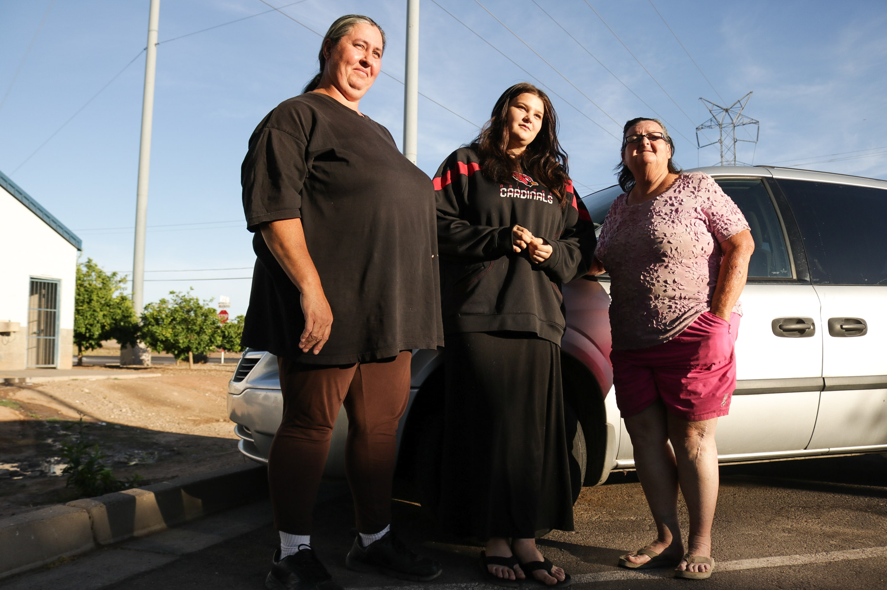PHOTO From left to right, Denise Ross, 44, Hailey Ross, 17 and Linda Stone, 69, stand outside the Society of St. Vincent de Paul. With costs piling up, they’re preparing to lose their home.Ross lives with her teenage daughter and nieces. Her mother, 69-year-old Linda Stone, lives in an apartment attached to the house.
Stone said what she fears most about becoming homeless again is having her granddaughters taken away by the Department of Child Safety, although the department said homelessness alone wouldn’t be reason enough to take away a child.
“Right now, I fear that we're going to be all separated again because we can't find any place that we can afford together,” she said.
 Duke Campbell, 18, thinks the Central Arizona Shelter Services (CASS) does more harm than good. Campbell says that during his stay at CASS, he’s had hundreds of dollars stolen.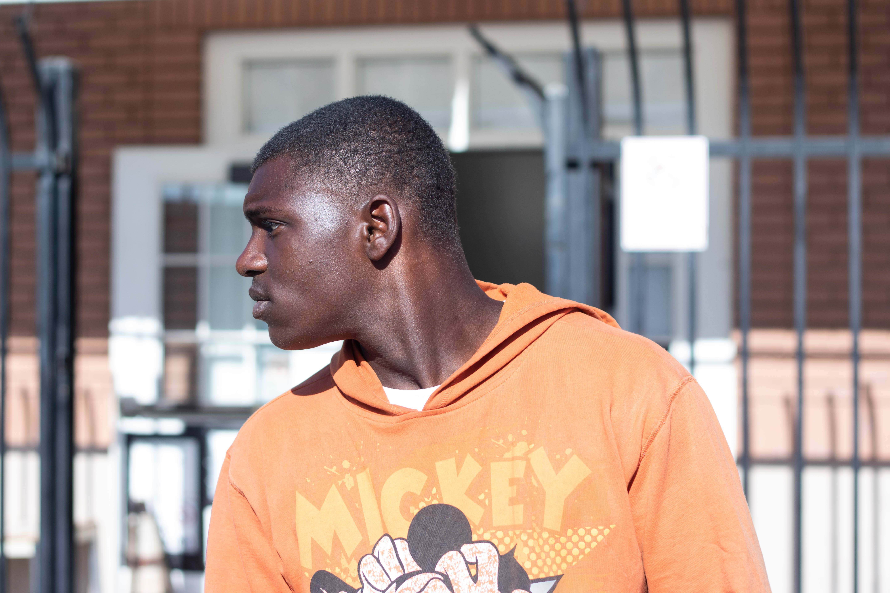Duke Campbell stands outside CASS on May 23 near 12th and Jefferson streets.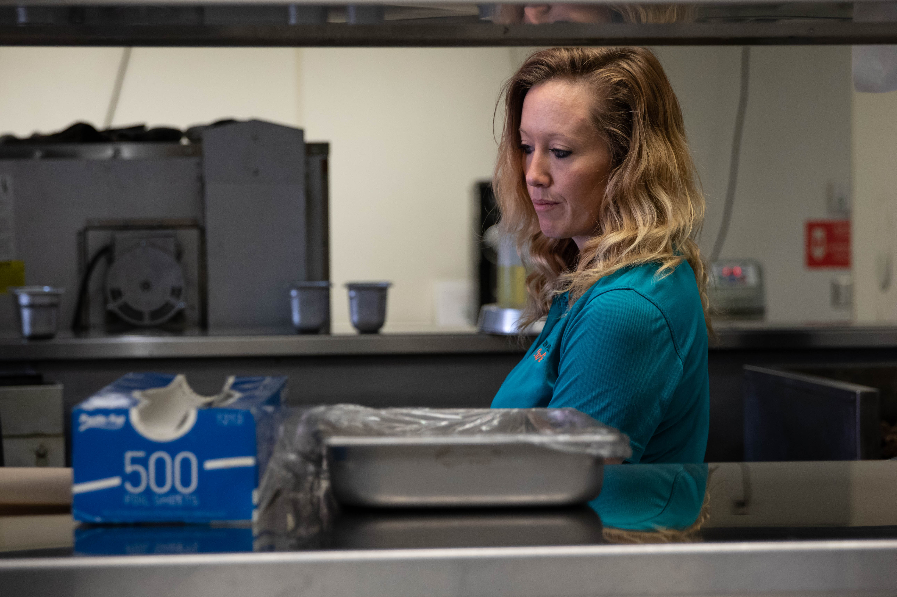Seanna Perry helps manage the kitchen at Mission Possible Cafe near 15th St. and W Van Buren Ave. Perry, who is three years sober, works as the cafe’s front of house supervisor.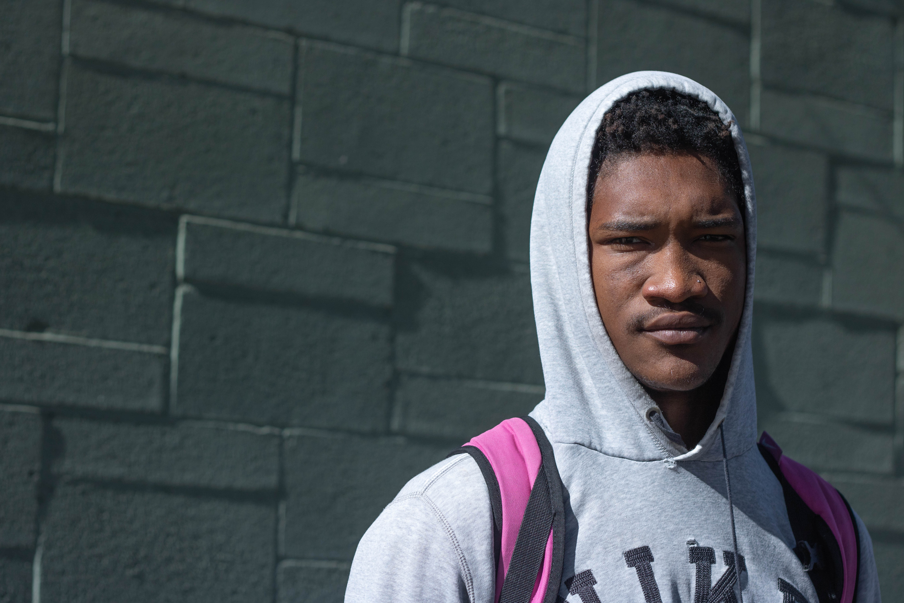Cameron Robinson, 22, stands outside CASS in downtown Phoenix. For almost three months, he’s slept at CASS while working multiple jobs to save money.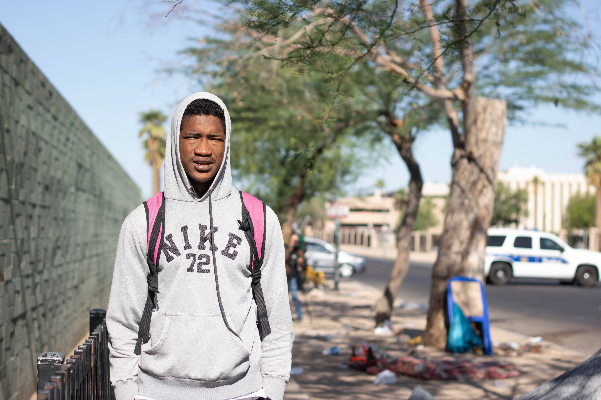Cameron Robinson stands for a portrait outside CASS. Robinson, who’s 22 years old, was working fulltime when he decided to quit and attend school-- the decision, he said, cost him too much money, rendering him homeless.
Duke Campbell, 18, thinks the Central Arizona Shelter Services (CASS) does more harm than good. Campbell says that during his stay at CASS, he’s had hundreds of dollars stolen.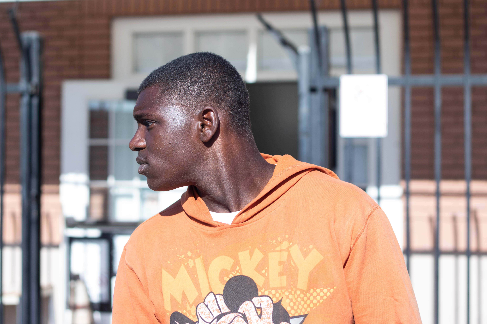Duke Campbell stands outside CASS on May 23 near 12th and Jefferson streets.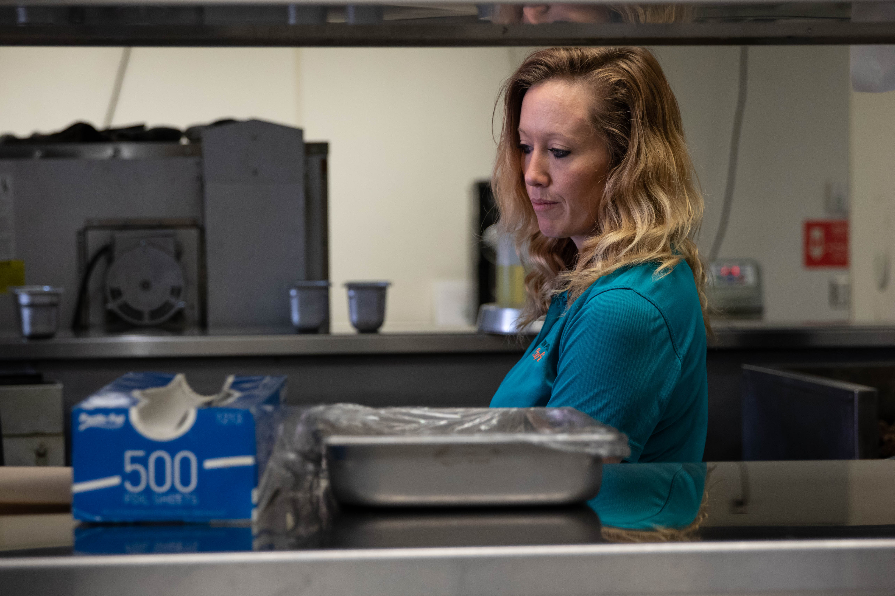Seanna Perry helps manage the kitchen at Mission Possible Cafe near 15th St. and W Van Buren Ave. Perry, who is three years sober, works as the cafe’s front of house supervisor.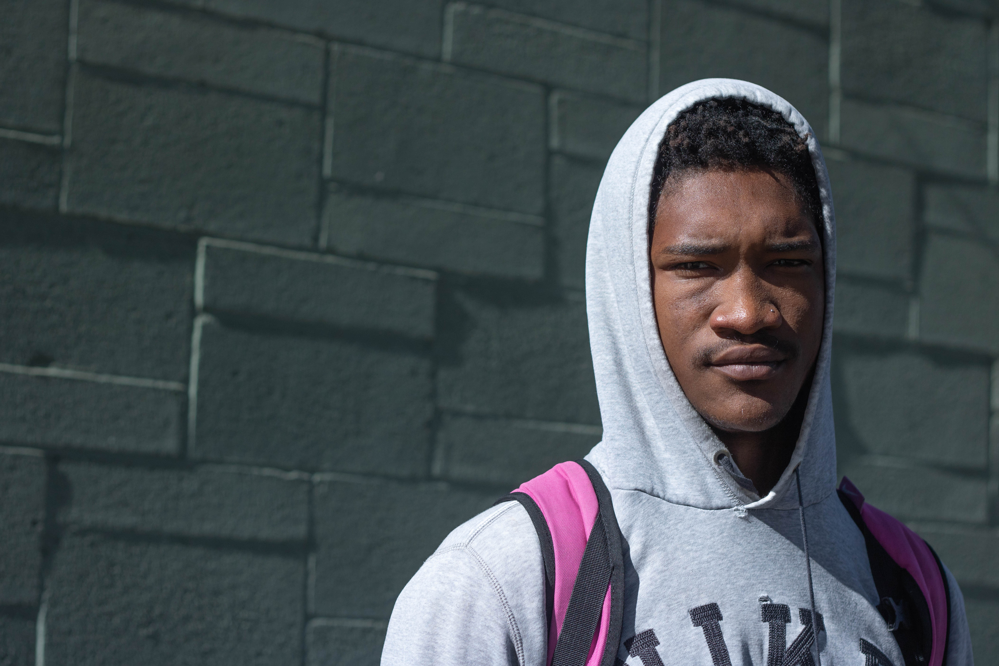Cameron Robinson, 22, stands outside CASS in downtown Phoenix. For almost three months, he’s slept at CASS while working multiple jobs to save money.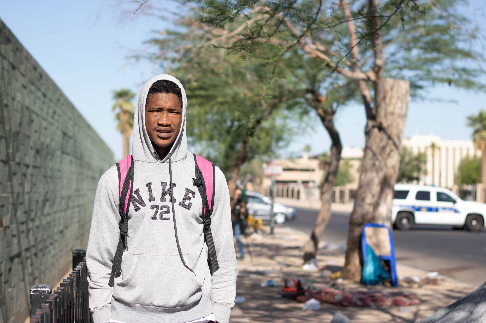Cameron Robinson stands for a portrait outside CASS. Robinson, who’s 22 years old, was working fulltime when he decided to quit and attend school-- the decision, he said, cost him too much money, rendering him homeless. Hailey Ross, left, and Denise Ross, right, laugh after Hailey takes a bite of ice from the cup in the Society of St. Vincent de Paul’s family dining center.
Hailey Ross, left, and Denise Ross, right, laugh after Hailey takes a bite of ice from the cup in the Society of St. Vincent de Paul’s family dining center. 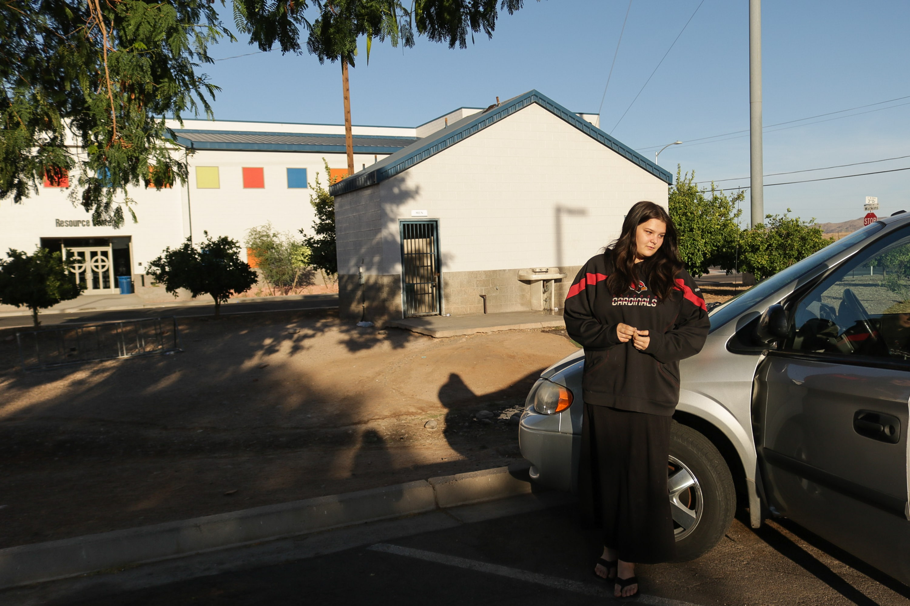(L/R) Denise Ross, 44, Hailey Ross, 17 and Linda Stone, 69, stand outside the Society of St. Vincent de Paul. With costs piling up, they’re preparing to lose their home.
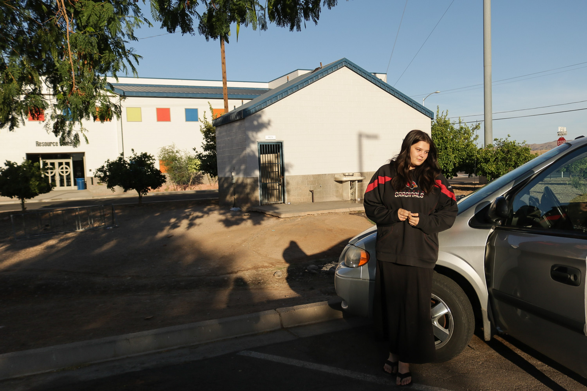(L/R) Denise Ross, 44, Hailey Ross, 17 and Linda Stone, 69, stand outside the Society of St. Vincent de Paul. With costs piling up, they’re preparing to lose their home.Stone is no stranger to this fear.
When her daughter, Ross, was 10 years old, she was taken from Stone by Child Protective Services.
Seven years later, Stone and Ross were reunited.
It was strange, Stone said, to have missed all that time together. She cannot do it again with her granddaughters.
“Right now, I fear that we're going to be all separated again because we can't find any place that we can afford together.”
— Linda StoneFor families experiencing homelessness in the area, there are resources available.
At the UMOM shelter, after being assessed on their barriers and needs, families are accepted into a shelter and are provided with meals, medical help, clothing and a childcare center.
“A family who's in shelter, they might time out of one shelter and then they'll bounce to another shelter and then they'll time out of that one shelter and bounce to another shelter, so we're never really addressing or ending their chronic homelessness,” said Dana Bailey, the director of development at UMOM.
To break the cycle, UMOM aims to provide shelter, then stable income and employment for the family.
For example, the organization has a six-week Starbucks barista training program which also helps individuals get certified in food preparation.
In addition, organizations like the Society of St. Vincent de Paul provide families, often made up of low-income individuals with nutritious meals. Ross is one of the many families that eat there weekly.
Though they have a place of their own to live, Ross and her family, like many families in Maricopa County, struggle to find — and keep — a permanent roof above their heads.
Youth
Families aren’t the only group that appear to be experiencing higher levels of homelessness.
In 2017, 40,799 individuals across the U.S. were experiencing homelessness as an “unaccompanied youth,” which, according to the U.S. Department of Housing and Urban Development (HUD), encompasses people under 25 years of age who are experiencing homelessness alone.
The number of unsheltered youth continues to increase in the county, according to data from the Maricopa Association of Governments.
Cameron Robinson, 22, who lives at the Central Arizona Shelter Services, is part of that unsheltered youth population.
Robinson started dealing with homeless after losing his mother to a heart attack. CASS, he said, isn’t an ideal living situation. He said It needs a lot of cleaning and the security guards have no empathy for those in the shelter.
It’s a place to pick himself up — not a stopping point.
“I ended up coming here and just been sitting here, stacking money, man, until I'm ready to, you know, go back out,” Robinson said.
Programs are constantly being created to help homeless youth do just that: launch themselves toward a more successful future.
The Homeless Youth Connection, which provides students with help when it comes to meals, school supplies and resources like healthcare, which gives students what they need to graduate.
About 70 percent of their students are in families experiencing homelessness. In 2018, they have close to 650 students. In 2019 they’re projected to serve about 800, said Kayla McCullough, organization community engagement manager.
If you can get to and support students who experience homelessness while they’re in high school, you can reduce the number of chronic homeless adults, said McCullough.
Ross may be preparing to move out, but she’s pushing her daughter to concentrate on moving up through her education. After she graduates, Ross’ daughter wants to go to school at Arizona State University to become a veterinarian, she said.
“I’ve told my kids from a young age, ‘You have to finish high school,’ and I said even nowadays, ‘You have to have a college education,’” Ross said. “Otherwise, you’re not going to get anywhere.”
Couple Struggles On the StreetsVIDEO Melissa Breaux and John Culpepper have been married for over 20 years, and homeless since November 2017. -
Unforgotten
Veterans' Homefront Battle
After serving in the National Guard, David Donaldson struggled to return back to civilian life.
Donaldson began experiencing symptoms of post-traumatic stress disorder. Self-medicating with alcohol, Donaldson said he chose to become homeless after staying at a friend’s house in Arizona because his friend had children.
“I didn’t want them to be negatively affected by whatever I was going through,” he said.
VIDEO Formerly homeless Iraq War veteran David Donaldson discusses his experiences with post-traumatic stress and homelessness.For six months, Donaldson lived on the streets, not knowing when he would have his next meal. Even though he had a family and a child, Donaldson felt like he had nothing left.
“I think once someone in the military doesn't have a mission, they kind of lose hope,” Donaldson said.
There were 204 veterans who were unsheltered in Arizona in 2017, according to an Arizona Department of Economic Security Homelessness report.
Donaldson decided to join the Arizona Guard and volunteered to go on deployment, which he said rescued him by giving him purpose.
Despite his past, Donaldson has used his experiences to help others as a certified peer support specialist at the Veterans Affairs Community Resource and Referral Center in Phoenix.
“Being a veteran, I think this will be the mission until the day I die."
- David Donaldson“I know the struggles of being on the street. What you’re going to eat, where you’re going to sleep, it’s 110, 115, 120 degrees outside,” Donaldson said.
Donaldson coordinates services based on his experiences for veterans dealing with PTSD, traumatic brain injuries, a substance-use disorder or suicidal ideations.
Overall his job is to prevent veteran suicide, whether homeless or not, Donaldson said. He said the worst place to be is in “that place where you’ve lost all hope.”
“It's more so being able to connect on a human level where when you come back from war a lot of those connections are severed,” he said. “And being a veteran, I think this will be the mission until the day I die.”
The center helps provide resources ranging from mental healthcare to career development for veterans.
Health Care for Homeless Veterans Outreach Coordinator Jeff Willgale said veterans have to take time to train themselves to be civilians after returning home from active duty.
“We really try to activate that veteran’s personality style when they were in bootcamp and say ‘you’re a civilian now, you can let your guard down,” Willgale said.
Army veteran Michael Ayres, 39, has lived on the streets outside Central Arizona Shelter Services for about a week.
Ayres said he recently began experiencing homelessness because he couldn’t properly manage his post-traumatic stress disorder symptoms with his loved ones.
Just in the area he lives on, he said there’s probably anywhere from five to 10 veterans at a time.
VIDEO Veteran Michael Ayres discusses how he deals with homelessness, mental health and veteran services alongside his canine companion Mary Jane.He often carries his service dog, Mary Jane, a quiet black schnauzer, in one of his arms.
“She helps out a lot and, honestly, by not being able to go through my normal course of treatment with intense medication and frequency music and what not, she’s pretty much been helping me hold myself together out here without completely losing it,” he said.
Gayle Shelton is another Army veteran currently experiencing homelessness.
“I think it’s harder on women,” Shelton said in reference to living unsheltered. “In the physical aspect of it.”
Shelton is a client at the center, which she said is a beautiful place and helps her meet her medical needs. As a 68-year-old female veteran, Shelton explains how she has trouble moving around Phoenix with her walker.
AUDIO Gayle Shelton talks about what it means being a female veteran experiencing homelessness.While Shelton thinks the city could do more to be more accessible for people with disabilities, she thinks the center does a good job with its services.
"People are losing sight of what it means to be human."
-David Donaldson“I love the guy that’s taking care of me, he spent an hour and a half with me just now. Every question I was asking, from soup to nuts, he’s taken time,” Shelton said. “He’s never made me feel less than.”
Shelton said she just wants basic human respect toward human life.
Donaldson said that there are misconceptions toward what homelessness looks like.
“I think what it boils down to is people are losing sight of what it means to be human,” Donaldson said.
Even after experiencing trauma and homelessness, Donaldson didn’t want to give up hope.
“I just knew that there were folks that I lost overseas that are no longer able to experience what we experience on daily basis,” he said. “And with that in mind there was no way that I could just give up hope. That I could just stop, lay down and give up. It wasn't an option.”
VIDEO Formerly homeless Iraq War veteran David Donaldson discusses how his experience with homelessness allows him to help other vets.